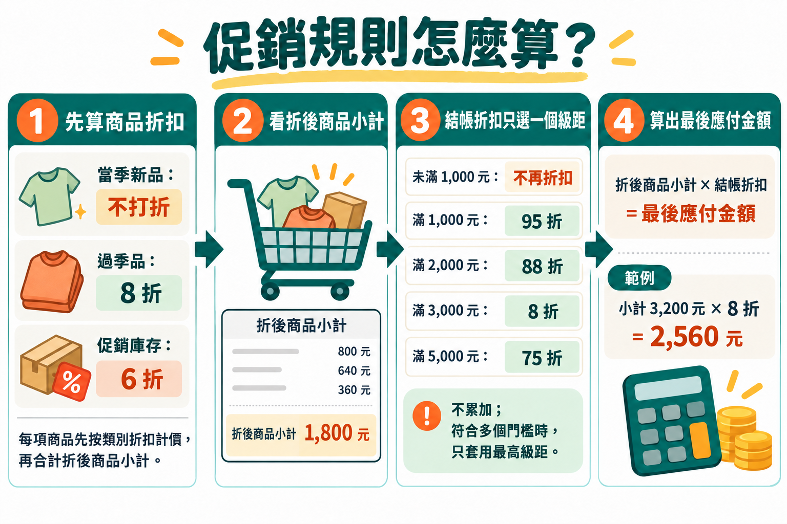
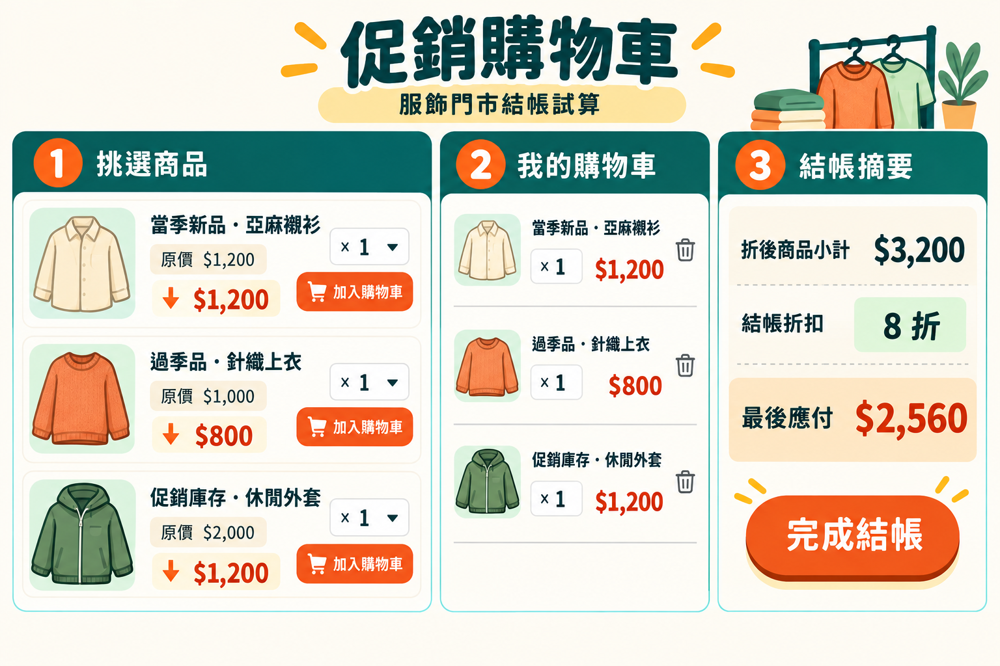
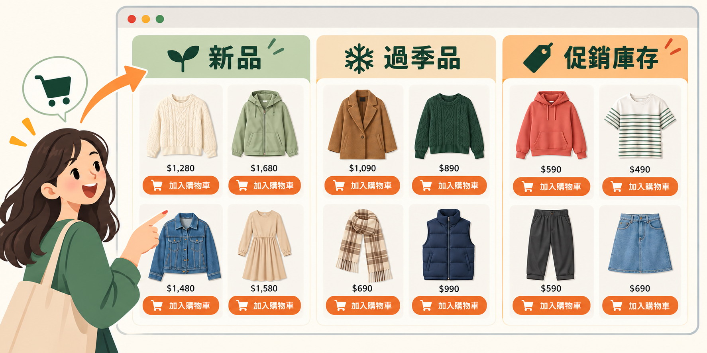

第一次・10/02（星期五）・行流三年級・零售管理
把零售問題做成網頁 APP
先把門市裡一個真實的小麻煩講清楚，交給 Codex 做成一個能在瀏覽器打開的小工具，再親手操作、逐項檢查。
本班以門市營運情境練習 AI Agent：學習從自己熟悉的專業工作找出值得改善的問題，說明使用者、所需資料、工作規則和預期結果，再把需求交給 Codex 協助製作。接著，請以門市工作者的角度試用促銷購物車結帳試算器，核對不同商品與數量的折扣是否正確，並用日常語言說明需要調整的地方。這套做法也能帶回各自的專業：由熟悉工作的人定義問題、請 AI Agent 協助處理，再根據實際情境判斷成果是否有用。
01Problem Statement 題目敘述
門市情境
服飾門市同時販售當季新品、過季商品和較早期的促銷庫存。顧客選購多件商品時，每件商品先依類別折扣計價；結帳時，再依折後小計決定是否享有整車折扣。商品折扣和整車折扣兩層規則交錯，店員不容易在結帳前快速算出應付金額。請設計一個促銷購物車結帳試算器，讓使用者挑選商品、設定數量，並清楚看見逐項折扣、小計、結帳折扣和最後應付金額。本練習提供 60 項虛構服飾商品資料，包含促銷類別與商品類型。

02Suggested Prompt 建議 Prompt
請先下載 60 項商品資料（products.json），並將檔案放進 Codex 正在處理的專案資料夾。接著請 Codex 檢視這份資料，再用它製作購物車試算器；不必重新手動輸入或貼上整份清單。
先檢查 60 項商品資料
請讀取這個專案資料夾中的 products.json，檢查並整理商品清單。資料應有 60 項虛構服飾商品，每項包含 id、name、price、category 和 type；category 分成當季新品、過季品、促銷庫存，每類各 20 項；type 標示上衣、褲子、外套、裙裝等商品類型。請檢查商品 ID 是否重複、原價是否都是 10 元的倍數，並依促銷類別與商品類型整理成容易閱讀的摘要表。先回報檢查結果，不要修改 products.json，也不要建立網頁。- 共 60 項商品，當季新品、過季品和促銷庫存各 20 項。
- 每筆資料都有商品名稱、原價、促銷類別和商品類型；商品 ID 不重複，價格都是 10 元的倍數。
再建立購物車試算器
我想做一個「促銷購物車結帳試算器」，讓店員把顧客選的商品加進購物車後，能馬上看出每樣商品折多少、整車還能不能再折，以及最後要付多少錢。請把畫面做成繁體中文，讓我能用瀏覽器直接開啟這個小工具。請讀取專案資料夾中的 products.json，使用裡面的 60 項商品資料，不要另造或遺漏商品。完成後請把小工具存成一個檔案，讓我開啟這個檔案就能在瀏覽器中使用。
商品折扣分三種：當季新品照原價，不打折；過季品打 8 折；較早期的促銷庫存打 6 折。商品清單和購物車裡，請讓人看得出商品類別、原價、折扣和折後單價。
我希望店員可以從商品清單挑商品、輸入數量後加入購物車，也可以改數量或移除商品。數量請限制為正整數。購物車每一項都要列出品名、類別、數量、折後單價和這一項的金額。
結帳時，請先把每項商品的類別折扣算好，再加總成「折後商品小計」。接著看小計符合哪個結帳折扣，只用符合的最高一級，不要把不同級距的折扣一層層累加：未滿 1,000 元沒有結帳折扣；滿 1,000 元打 95 折，滿 2,000 元打 88 折，滿 3,000 元打 8 折，滿 5,000 元打 75 折。像小計 3,200 元，就只打 8 折，不再另外打 95 折或 88 折。最後應付金額請四捨五入到整數元。
結帳摘要請列出原價合計、商品折扣後的小計、套用的結帳折扣級距、折抵金額和最後應付金額。只要商品或數量有變動，金額就要跟著更新；如果購物車是空的，也請顯示清楚的提示。
畫面請清楚好操作，手機和電腦都方便使用，重要金額要容易看見。這個小工具只用虛構商品資料，不連接真實商店或顧客資料。完成後，請簡單告訴我怎麼使用，以及怎麼確認折扣有算對。03Check it 完成檢核
驗算折扣金額
- 選一項原價 100 元的新品、一項過季品和一項促銷庫存：折後單價是否分別為 100、80、60 元？
- 折後商品小計為 900 元時，是否沒有結帳折扣？
- 折後商品小計剛好為 1,000、2,000、3,000、5,000 元時，是否分別只套用 95 折、88 折、8 折、75 折？
- 折後商品小計為 3,200 元時，是否只套用 8 折，最後應付 2,560 元？
檢查操作和畫面
- 修改購買數量或移除商品後，小計、折扣級距和應付金額是否一起更新？
- 購物車清空時，是否顯示空車提示，而且不會出現錯誤金額？商品清單是否能正常顯示在小工具中？
04進一步調整畫面
提出外觀調整需求
AI Agent 第一次生成的畫面，可以先視為 80 分的起點：主要功能已經做出來，但外觀、資訊層次或操作細節可能還不完全符合門市實際需要。先完成第 03 節的檢核，確認小工具操作和金額都正確，再根據使用情境指出最需要改善的地方，例如讓商品價格更醒目、讓結帳摘要更容易找到，或讓手機畫面更好操作。請一次提出清楚、具體的調整需求，請 Codex 修改後再親自查看；經過幾輪「觀察、描述、修改、檢查」，一步步從 80 分進步到 85 分、90 分，甚至朝著 100 分的理想終點前進。
這些分數用來比喻逐步改善的過程，不是固定的評分標準。AI Agent 可以協助修改畫面，但「什麼才算更好用」要由熟悉門市工作的人判斷。每次調整後都要確認原有商品、操作方式、折扣規則和計算結果仍然正確，再決定是否繼續修整。

這個促銷購物車小工具的操作和金額我已經確認正確，請保留目前所有商品、操作方式、折扣規則和計算結果，不要改動或拿掉。這次只想調整畫面，讓它更像服飾門市使用的促銷工具；可以參考上方示意圖的配色和資訊安排。
請用溫暖明亮的米白色作為底色，深綠色呈現標題，暖橘色標出折扣、價格和主要按鈕。商品資訊請分成容易辨認的小卡片，商品名稱、類別、原價和折後價格要清楚好讀；購物車裡的最後應付金額請特別醒目。
手機和電腦上都要看得清楚、方便操作。完成後請簡單說明畫面有哪些地方調整了，並提醒我再檢查商品選取、購物車操作和折扣金額是否仍然正確。05整理商品型錄，讓挑選更直覺
把商品選擇區改成視覺化型錄
完成第 04 節的畫面調整後，再從顧客或門市人員挑選商品的角度，改善商品選擇區。型錄可以同時依「促銷狀態」和「商品類型」整理：促銷狀態包括新品、過季品、促銷庫存；商品類型則可包括上衣、褲子、外套、裙裝和配件等。請 Codex 讓使用者能清楚辨認這兩種分類，並為不同商品類型加入相符的商品圖片或清楚易懂的視覺圖示，讓使用者能先看圖辨認商品，再閱讀名稱、價格和折扣資訊。若目前沒有可用的商品照片，請使用一致、清楚的示意圖，並避免使用失效的圖片連結。
型錄不只要好看，也要讓人容易找到商品並加入購物車。請觀察類別是否清楚、商品卡片資訊是否易讀、加入購物車的按鈕是否明顯，以及在手機上是否方便瀏覽。完成後逐項操作並核對購物車與折扣金額，確保這次 UX（使用者體驗）改善沒有影響既有功能。

請改善這個促銷購物車小工具的商品選擇區，將商品整理成容易瀏覽的型錄。請同時呈現促銷狀態分類「新品」、「過季品」、「促銷庫存」，以及商品類型分類，例如「上衣」、「褲子」、「外套」、「裙裝」和「配件」，讓使用者容易找到想買的品項。請保留目前所有商品資料、折扣規則、購物車操作與計算結果，不要刪除或改動。
請為每一類商品加入相符的圖片或清楚易懂的視覺圖示，並以商品卡片呈現商品名稱、類別、原價與折後價格。若專案中沒有合適的商品照片，請使用風格一致的示意圖或圖示，不要放入不相關或可能失效的外部圖片連結。
請讓使用者容易分辨商品類別、找到商品並加入購物車；在手機和電腦上都要方便瀏覽與操作。完成後請告訴我你改善了哪些地方，並檢查各類商品都能正確加入購物車，原有的數量、小計、折扣級距和應付金額仍然正確。檢查型錄和挑選流程
- 新品、過季品和促銷庫存是否容易辨認？上衣、褲子、外套等商品類型是否也能快速找到？
- 商品名稱、價格、折扣和加入購物車的操作是否容易找到？手機上是否也方便使用？
- 從每一類挑選商品後，購物車內容、折扣級距和應付金額是否仍正確？
06Expected Outcome 預期成果
一個可以挑商品、放進購物車並計算兩層折扣的結帳小工具。
以下成果只是其中一種可能。你做出來的畫面、配色、商品排列和操作細節可能和範例不同；只要符合需求、功能正常，而且通過檢查，就是有效的成果。
商品清單與購物車功能
- 可開啟三個成果範例，觀察功能、畫面與型錄如何逐步改善：初始版、畫面調整版、商品型錄版。每個範例都會在新分頁開啟。
- 新品不打折、過季品 8 折、促銷庫存 6 折；清單與購物車會顯示促銷類別、商品類型和折後價格。
- 使用者可以加入商品、調整數量、移除商品；數量或購物車變更時金額即時更新。
- 結帳小計以「商品類別折扣後」的金額計算，只套用最高符合的一個級距：未滿 1,000 元無結帳折扣；滿 1,000 元 95 折、滿 2,000 元 88 折、滿 3,000 元 8 折、滿 5,000 元 75 折。
- 摘要顯示原價合計、商品折扣後小計、結帳折扣級距與金額、最後應付金額；應付金額四捨五入到整數元。
- 作品是一個可直接用瀏覽器開啟的小工具，搭配虛構商品清單即可使用，不連接真實商店系統。